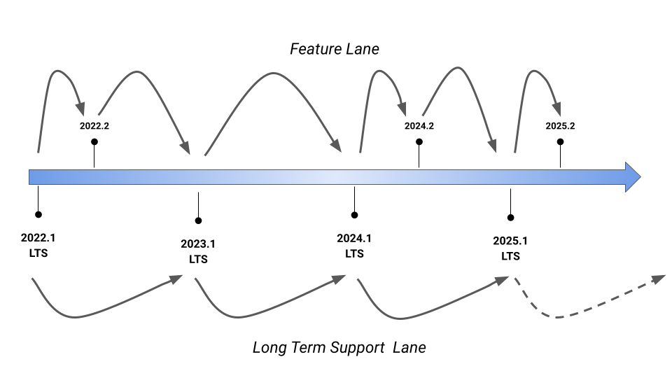

{kind=link}
Was this page helpful?
ScyllaDB Enterprise Version Support¶
Supported Versions¶
Version |
Released |
Status |
End of Life (EOL) |
|---|---|---|---|
2024.2 |
November 2024 |
Supported |
After 2026.1 or 2025.2 is released (see Version Support Policy) |
2024.1 (LTS) |
February 2024 |
Supported |
After 2026.1 is released (see Version Support Policy) |
2023.1 (LTS) |
August 2023 |
Supported |
After 2025.1 is released (see Version Support Policy) |
2022.2 |
January 2023 |
Not supported |
June 2024 |
2022.1 (LTS) |
August 2022 |
Not supported |
June 2024 |
Version Numbering¶
ScyllaDB Enterprise follows the MAJOR.MINOR.PATCH semantic versioning:
MAJORversions contain significant changes in the product and may introduce incompatible API changes.MINORversions introduce new features and improvements in a backward-compatible manner.PATCHversions have backward-compatible bug fixes.

LTS vs. Feature Releases¶
Long-Term Support (LTS)
Released approximately once a year.
Two last LTS versions are supported.
Feature releases:
2-4 feature releases per year.
Closely follow ScyllaDB Open Source releases (see ScyllaDB Enterprise vs. Open Source Matrix).
Introduce features added in ScyllaDB Open Source, as well as Enterprise-only features.
You can only use LTS releases (upgrading to the latest patch release for the greatest stability) or follow the feature and LTS releases for the latest feature set.
An illustrative example:
Version Support Policy¶
The last two LTS versions are supported.
The last two major.minor versions (Feature or LTS release) are supported.
Example
When 2024.2 (Feature) is released, the following are supported:
2024.1 and 2023.1 (the last two LTS)
2024.2 (Feature) and 2024.1 (LTS)
When 2025.1 (LTS) is released, the following are supported:
2025.1 and 2024.1 (the last two LTS)
2024.2 (Feature)
When 2025.2 (Feature) is released, the following are supported:
2025.1 and 2024.1 (the last two LTS)
2025.2 (Feature)
Patch Versions¶
All supported versions (major and minor, LTS and Feature) will get patch releases when required.
We recommend upgrading to the latest patch version. You should especially upgrade to the latest patch of your current version before upgrading to a new major or minor version.